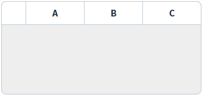
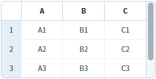
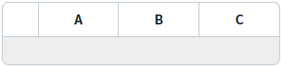
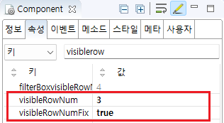

GridView의 'visibleRowNumFix' 속성을 사용하여, 초기 높이를 'visibleRowNum' 속성에 설정된 행의 개수를 바탕으로 설정한 예제입니다. 데이터가 할당되기 전의 GridView의 높이를 고정할 때 주로 사용됩니다.
이 기능은 아래의 속성으로 사용할 수 있습니다.
visibleRowNum : (속성) 화면에 표현할 행의 개수.
visibleRowNumFix : (속성) 초기 gridView의 높이를 visibleRowNum에 설정한 값에 해당하는 크기만큼 자동으로 늘려주는 설정
visibleRowNum 속성에 설정한 행의 수 만큼 초기 높이 설정하기
(기본 설정) visibleRowNumFix 속성 사용 안함
예제 영역 'visibleRowNum 속성에 설정한 행의 수 만큼 초기 높이 설정하기'에 구성된 GridView에서 테스트합니다.1
STEP 1: 실행된 결과를 확인합니다.
GridView에 설정된 높이는 70px이지만, visibleRowNum 속성에 설정된 값인 3을 반영하여 높이가 설정되었습니다.
Image 1.브라우저(Chrome) 실행 예시

2
STEP 2: GridView에 데이터 출력하기
'GridView에 Data 할당하기1' 버튼을 클릭합니다.
3
STEP 3: 실행 결과를 확인합니다.
초기에 그려진 GridView의 높이가 동일하게 유지된 상태로 데이터가 출력됩니다.
Image 2.브라우저(Chrome) 실행 예시

예제 영역 '(기본 설정) visibleRowNumFix 속성 사용 안함'에 구성된 GridView에서 테스트합니다.1
STEP 1: 실행된 결과를 확인합니다.
GridView가 설정된 높이, 70px에 맞춰 그려집니다.

2
STEP 2: GridView에 데이터 출력하기
'GridView에 Data 할당하기2' 버튼을 클릭합니다.
3
STEP 3: 실행 결과를 확인합니다.
visibleRowNum 속성에 설정된 값인 3을 반영하여 GridView의 높이가 늘어납니다.
Image 3.브라우저(Chrome) 실행 예시
GridView의 속성을 정의합니다.
[필수] visibleRowNum="설정 값"
화면에 보여질 행의 수
예시) visibleRowNum="3" //화면에 보여질 행의 수를 3개로 설정
[필수] visibleRowNumFix="true"
[default: true, false] 초기 gridView의 높이를 visibleRowNum에 설정한 값에 해당하는 크기만큼 자동으로 늘려주는 설정
예시) visibleRowNumFix="true"
Image 4.웹스퀘어 스튜디오의 Component View - 속성 설정 예시

Example 1.Source
<!-- gridView 의 소스 본문 예시 --> <w2:gridView visibleRowNumFix="true" visibleRowNum="3" style="height:70px;"> <!-- 중략 --> </w2:gridView>
visibleRowNum
visibleRowNumFix
getVisibleRowNum( )